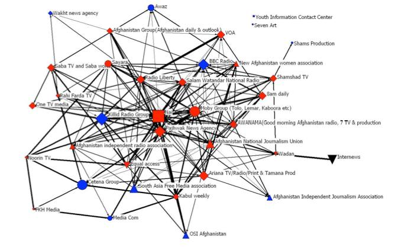
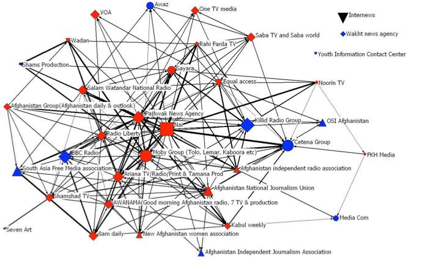

Afghanistan is a challenging environment for journalists to do their jobs. The media law needs improvement, the law needs to be respected and enforced effectively, journalists need to improve their skills in covering challenging issues, and media sector organizations need to work more effectively to network and advocate for improved conditions for media.
AMDEP activities take a multidimensional approach to these challenges, working with Nai, GOHAR (The Media Group), the Annenberg School of Communication at UPenn, Albany Associates, Equal Access and other local organizations. Activities include:
This study presents a inter-organizational network map of the Afghan media sector -- as self-report by the Afghan media itself -- showing the core members as well as the outliers within the media sector network, their methods and strength of communications as well as the tone and tenor of the links that connect them within this network. This is the media sector map prior to the implementation of AMDEP projects and serves as a baseline for the impact of AMDEP activities related to the strength of the Afghan media sector and its ability to pass information through the community of media sector organizations. A follow-up study will be completed at the close of AMDEP to assessing the impact of the AMDEP projects by tracking the shift in size, communications flows, core group and primary players with an eye to expansion into the provinces. The full report will be released after the follow-up study, so that it does not influence further studies.
This baseline study delineates the current Afghan media sector based on primary data collected in interviews with 23 media sector representatives. The map shows a core group of 36 key organizations, contained to the capital, with a central linked group of 16 with strong and cohesive ties.

Interestingly and contrary to the often rumored competition within the Afghan media sector, this report’s findings suggest that there are far more cooperative relationships and than competitive relations and that hoarding of information is uncommon. However, this tone will likely shift to more competitive as international funding dwindles in the future, which would be a negative trend for a new developing sector as it weakens ties and chokes effective communications, notably communications necessary for effective advocacy.

More than 50 interviews to gather the data for the mapping, where interviews were not possible a questionnaire was used (download). Interpretation of some of the analyses is tempered by the fact that not all key organizations participated in the survey. Regardless, system norms appear to safeguard against risks inherent in assuming reciprocity and therefore, analyses are useful for directing ways to strategic networking vis-a-vis information sharing and mobilizing these interorganizational relationships.
This research is directly linked to the indicator -- 2.1.a) Percentage increase in Afghan media sector network size and ability to pass information regarding advocacy in Kabul and the provinces. Additional importance of this work is to provide a baseline from which to measure the important efforts of AMDEP to help reconfigure relationships in this critical area by supporting he growth, strengthening, maturation and increased collaboration within the Afghan media sector - notably working with partners Nai and the Media Group holding a series of media forums throughout the country to bring together media professionals to consider pressing issues. The report shows Nai and Pajhwok - two primary AMDEP partners - as central to the sector - which means they are well placed to have a broad impact on behalf of AMDEP goals. Additionally, this has gathered data showing strong communications and collaboration within the cores group of 30+ media groups - in contrast to long mentioned antagonism within the core media sector.
This research will supervised and analysis conducted by Marya L. Doerfel, Ph.D., Department of Communication, School of Communication & Information, Rutgers, the State University of New Jersey. It is also supported and overseen by Maureen Taylor, Ph.D., Gaylord Chair of Strategic Communication, University of Oklahoma. The Internews M&E unit conducted field research and initial analysis.
Nai has collected data on violence against journalists since 2002. In 2011 Internews and Nai worked with Development Seed to map this data. The map has been used as an advocacy tool, drawing new attention to the issue. Nai is also being assisted to improve data collection and management, including the development of a mobile reporting interface for journalists and civil society groups to notify cases and a tailored human rights database for improved case tracking.
Journalists from every province in Afghanistan have taken part in forums to allow them to raise key issues that challenge their effectiveness as journalists. For each topic, four provincial consultations were held in Herat, Mazar-i-Sharif, Jalalabad and Kandahar, attracting 750 participants from media organizations, civil society and government. Issues and recommendations were brought to a national conference in Kabul in July. Read more about the conferences.
Topic 1 Access to Information (download full report)
Topic 2 Journalists Working Conditions and Contracts (download full report ... forthcoming)
Law students from five Afghan universities competed to win a fictional media law case. Following training and preparation time, each team argued their case in lead up rounds, with the two finalists meeting at the Appeals Court in front of real judges. The competition, along with revised media law curriculum, will help train a new generation of media lawyers and encourage media law debate. The activity was coordinated by AMDEP-partner Annenberg School of Communication at UPenn.
Media and Communications Law Training for Lawyers
Media lawyers, along with some government and industry representatives, were trained in law affecting journalists, media contractual law, and telecommunications law. The training was developed and coordinated by AMDEP-partner the Annenberg School of Communication at UPenn, with Nai and Internews. Read more …
AMDEP-partner Equal Access Afghanistan (EAA) wrote and produced 22 episodes of the radio drama serial 'Chenaran: Story of a Village', that creatively explores the role of journalists in everyday life scenarios in Afghanistan. EAA distributed the programs across the Salam Watandar network and to local FM radio stations in 16 provinces. Listener feedback was extremely positive: after each episode, listeners were asked to answer a set of questions, and EAA has received hundreds of SMSs and phone calls answering these questions. For example, one girl from Paktika called to asked where the production unit was located as she wanted to work there; another woman from Helmand called to say she would like to become her village's first journalist so she could provide coverage of the issues her village experiences.